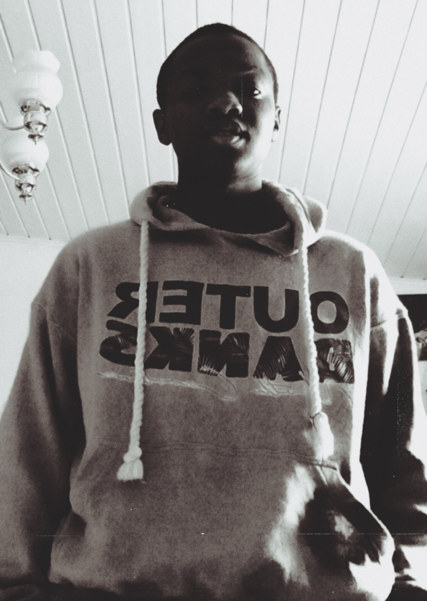
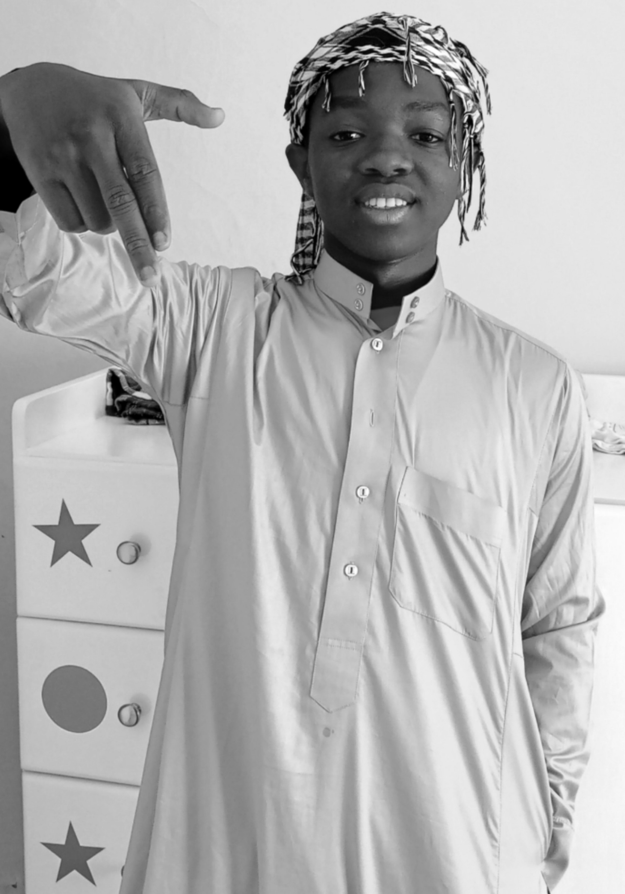
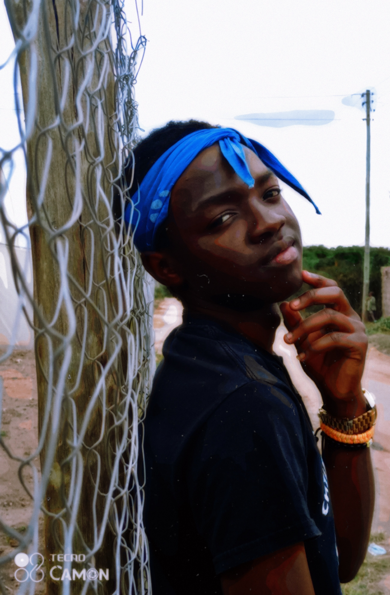
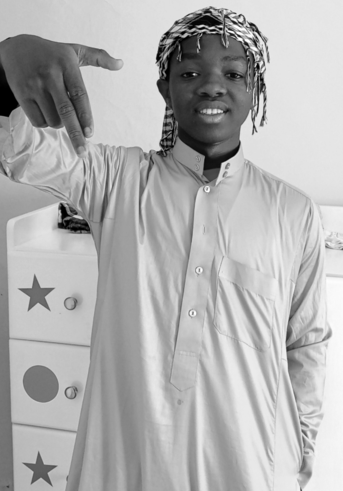
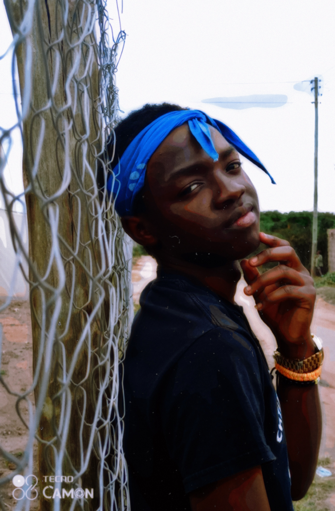

It is not a must to do picture editing, the essence is just to make the image more alive and more attractive.
Look at this perspective, during the old times, pictures were in black and white because the technology of colour capture was not up yet. In this times, where the camera is enhanced and able to bring out a clear focus of an image of an object and producing almost the exact replica.
Boosting the contrast of an image, croping an image, increasing the brightness and other many types of edits, show an appearance of a lively photo.
As the name speaks for itself, the type of picture editing tends to make appearance of a photo be a little bit aged, maybe by:black and white, paper appearance and other different effects. For example, observe the picturres below...
 


Take note that the camera which took this photos was a 21st century smartphone.
Even though the last photo is not black and white, the graphics show that it appears to be taken during the 80s or 90s.
In this type of edit, images tend to like a cartoon or something funny or easily drawn.